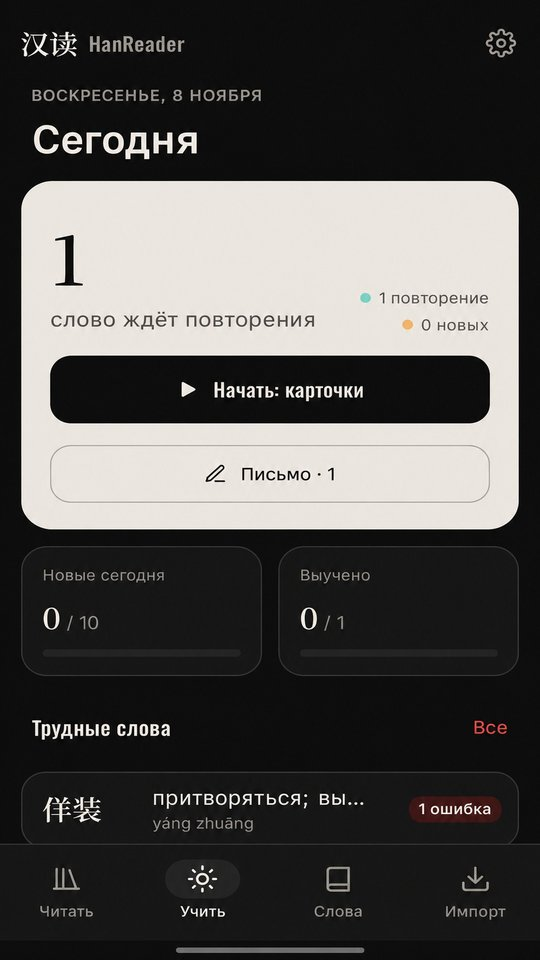

Испанский
hablaban → hablar
Приложение распознаёт разные формы слов и устойчивые выражения. Можно выбрать испанский Испании или Латинской Америки, чтобы учитывать региональные значения. Сложность слов оценивается примерно по уровням A1–C2.
Читай на испанском, английском и китайском с переводами незнакомых слов прямо над текстом. Открывай словарь одним нажатием и сохраняй новые слова для повторения. Для китайского есть пиньинь.
Тестовая версия 0.26.3 · Android 8 и новее · бесплатно, без рекламы и регистрации
Читать и пользоваться словарями можно без интернета. ИИ и дополнительную онлайн-озвучку можно включить по желанию.

Выбери язык книги. Знакомые слова, карточки и прогресс по каждому языку сохраняются отдельно.
hablaban → hablar
Приложение распознаёт разные формы слов и устойчивые выражения. Можно выбрать испанский Испании или Латинской Америки, чтобы учитывать региональные значения. Сложность слов оценивается примерно по уровням A1–C2.
went → go
Приложение находит начальные формы слов, распознаёт сокращения и выражения. В карточке можно посмотреть транскрипцию IPA, а примерный уровень A1–C2 помогает выбирать слова для изучения.
银行 · yín háng
Читай с пиньинем и цветными обозначениями тонов. Поддерживаются упрощённые и традиционные иероглифы, уровни HSK 2.0 и 3.0, устойчивые выражения и подсказки по грамматике.
Одно и то же слово может означать разные вещи. Обычный словарь не всегда подскажет, какой перевод подходит в конкретном предложении. DeepSeek помогает уточнить значение с учётом контекста, если ты включишь эту функцию.
Одно слово — разные значения. Например, испанское pista может означать «дорожка» или «улика». Исправление действует только там, где оно нужно, и не меняет перевод этого слова во всех остальных книгах. Твои исправления важнее предложений ИИ.
Не нужно проверять одно и то же заново. Результаты сохраняются на телефоне. Если текст и настройки не изменились, приложение использует их повторно без нового запроса к DeepSeek. В настройках можно ограничить число запросов и посмотреть расход токенов.
ИИ подключается только по желанию. Если включишь его, нужные для проверки фрагменты отправятся в DeepSeek напрямую с телефона. Запросы оплачиваются с твоего API-баланса, а ключ хранится на устройстве в зашифрованном виде. Подробности есть в политике конфиденциальности.
Даже уверенный ответ ИИ может оказаться ошибочным. Один API-ключ используется для трёх языков, но результаты проверки каждого языка хранятся отдельно. Книги целиком не отправляются.


Снимки китайского режима сделаны в более ранней версии приложения. Некоторые элементы интерфейса с тех пор изменились. Экран с DeepSeek здесь не показан.
Сейчас доступна тестовая версия 0.26.3 для Android. Приложение можно скачать на APKPure или запросить актуальный установочный файл у разработчика:
Переход со старой китайской читалки. Новое приложение устанавливается отдельно. Чтобы перенести книги и прогресс, сделай резервную копию в старой версии и восстанови её в новой. Ранняя китайская версия по-прежнему доступна отдельно.
Да. Читать книги, смотреть значения слов и повторять карточки можно без DeepSeek и подключения к сети. Интернет нужен для проверки через ИИ и дополнительной онлайн-озвучки. Системный голос Android тоже может использовать сеть в зависимости от настроек телефона.
Нет. ИИ уточняет перевод в конкретном предложении, а основной словарь остаётся прежним. Если предложенное значение не подходит, его можно изменить или отменить.
В резервную копию входят книги, места чтения, закладки, карточки, прогресс, выделения и исправленные вручную значения. Результаты проверок ИИ и API-ключ пока не экспортируются, но сами проверки сохраняются на телефоне после перезапуска приложения.
Теперь можно читать на трёх языках, включая английский. Добавлены ручная и автоматическая проверка значений через DeepSeek и сохранение результатов. Исправлены скачки страниц при обновлении подсказок, улучшено отображение промежутков и разделителей сцен в EPUB.
Если обнаружишь ошибку, неточный перевод или неудобную функцию, напиши разработчику. При сообщении об ошибке укажи версию приложения, язык книги и что ты делал перед её появлением.